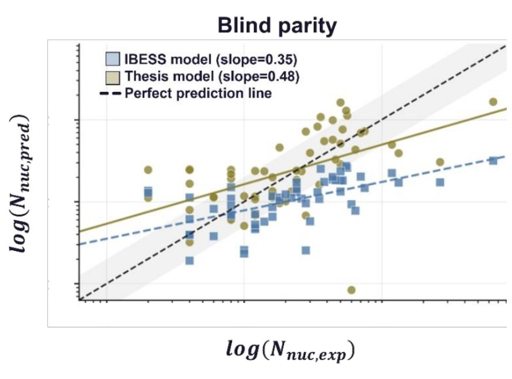
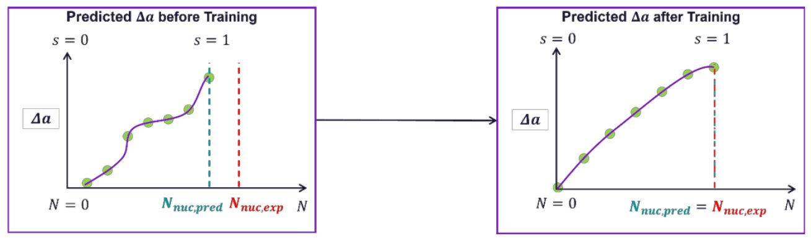
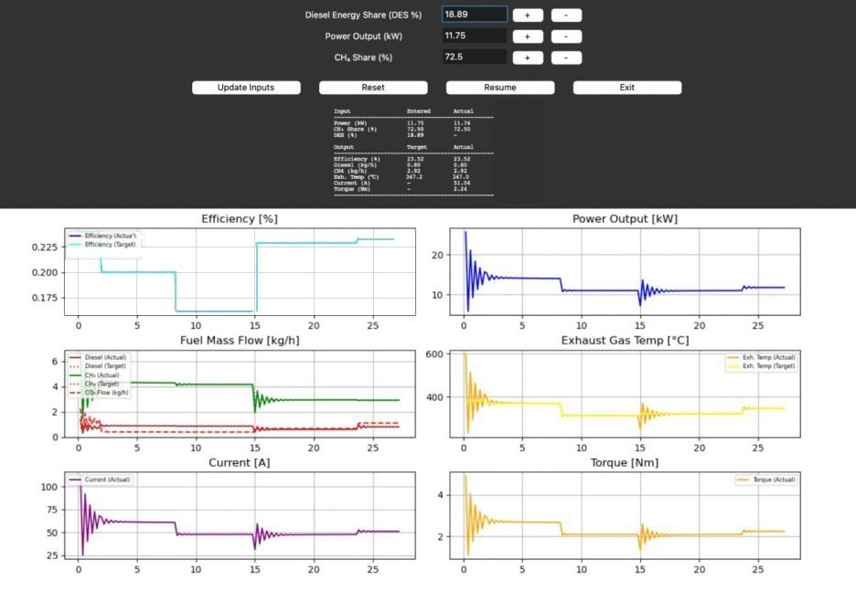
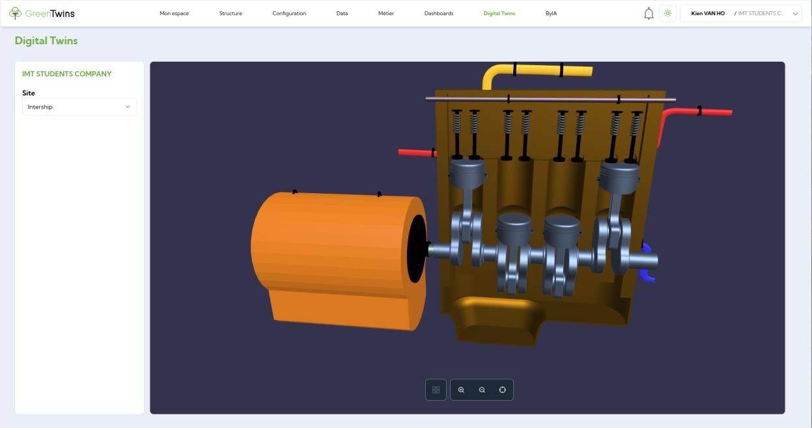
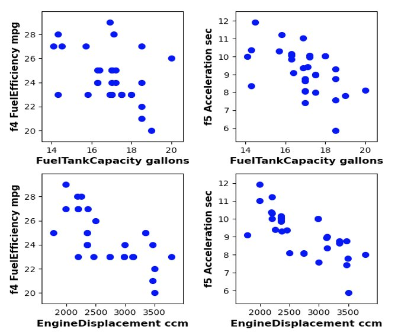
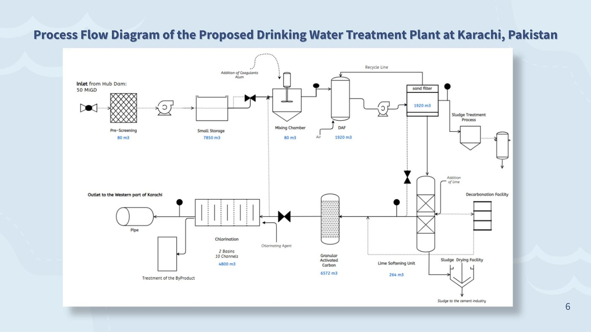
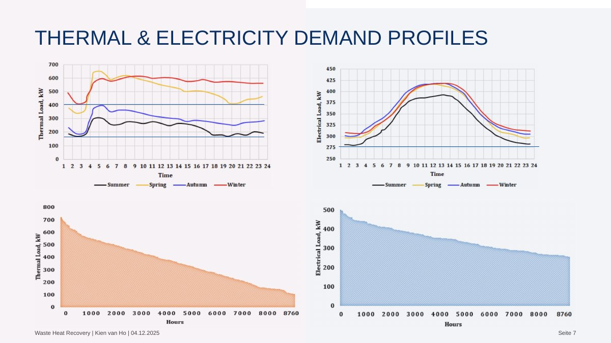
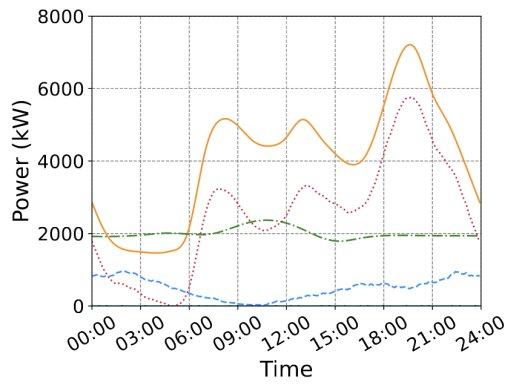
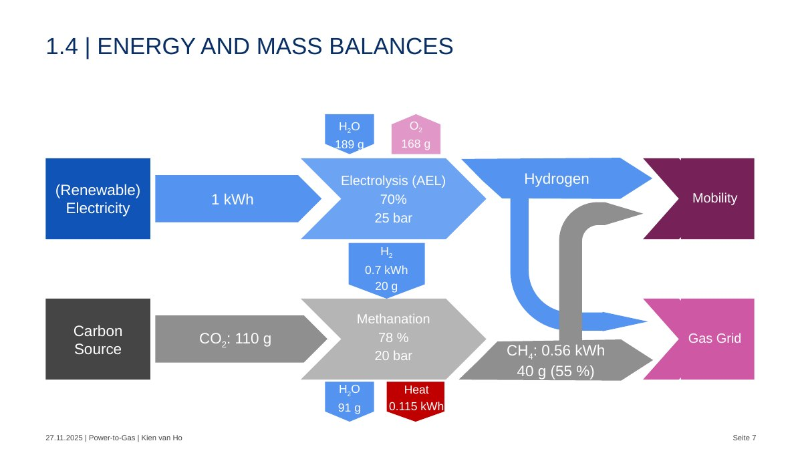

09/2026 – now
Independent project, RAG system
Geoberlin · Berlin
- Designing and building a retrieval-augmented generation system for a surveying engineering firm.
Physics-informed ML and modelling for energy systems
Energy and process engineering: sizing, scenarios and investment cases
I build models that keep the physics and learn from the data, and I validate them carefully on small, expensive datasets. At Siemens Energy that was a hybrid crack-growth model for gas turbines. At Mercedes-Benz, a robot energy model. In my master's, an engine digital twin I led and implemented.
Engineer trained in energy systems and process design in Germany, France and Hungary. In my projects I sized a drinking-water plant for Karachi with my team, modelled Berlin's vehicle-to-grid potential, and assessed campus CHP and Power-to-Gas pathways. In industry: production engineering at Mercedes-Benz and a master's thesis with Siemens Energy on gas-turbine component life.
Projects in this view
Machine learning & modelling
Each project shows the short version. Open it for the full case study.
Gas turbines · fracture mechanics · hybrid ML
A neural network that predicts crack-growth curves for gas-turbine components with manufacturing defects. It is trained on experiments and held to the shape of an established fracture-mechanics model (IBESS) through the loss, so life estimates improve while the curves keep the physical model's shape.

The physical short-crack model (IBESS) is interpretable but, on the experimental data, it systematically underestimated fatigue life. With only 56 specimens from one material at one nominal stress ratio (R = 0.1), a free black-box model would overfit and lose physical meaning.
Instead of free values at every point, the network outputs 16 decoder parameters per specimen: 7 density knots each for the depth and surface crack fronts, one terminal surface-to-depth ratio, and one cycle "warp" multiplier. Integrating and normalising the knots guarantees monotonically growing crack curves by construction.
Initial defect size (a₀, c₀), max/min stress, specimen width and thickness, defect type (surface or embedded, one-hot), plus derived aspect ratio, stress range, stress ratio (nominally 0.1 throughout, so it carries little information) and log-transformed size and load terms. All standardised. The physics curves are not network inputs: they supervise the curve shape through the loss, and the physics model's threshold cycle sets the time scale that the warp multiplier corrects.
Total loss = experimental error (MSE of log cycles) + four physics penalties: curve shape vs. IBESS, terminal crack-front ratio, concavity of the threshold curve (checked at 17 points), and a cap on the warp correction so timing cannot absorb all the error.

| Metric | Baseline | Thesis | Change |
|---|---|---|---|
| MAE (log) | 0.965 | 0.771 | −20.1% |
| RMSE (log) | 1.171 | 1.062 | −9.3% |
| Late predictions | 8 / 56 | 29 / 56 | +21 |
Errors are measured in natural-log cycle space, so the typical miss shrank from a factor of about 2.6 to about 2.2 in cycles. The error distribution moved from a consistent underestimate to centred on zero, and the median prediction ratio moved close to 1. The smaller RMSE gain shows that typical predictions improved more than the worst ones.
“His ability to translate complex physical relationships into comprehensible data-driven models deserves particular mention.”
Reference letter, Predictive Analytics, Siemens Energy (translated from German)
Digital twin · dual-fuel engine · ML services
A working twin of a 14.4 kWe dual-fuel (diesel and biogas) generator set: set power and fuel mix, and ML models plus physics formulas predict efficiency, exhaust temperature and fuel flows, served through an API into a 3D platform.

| Operating point at about 80% load | Twin vs. measured |
|---|---|
| Efficiency | within 0.1 pp |
| Exhaust temperature | within 1.5% |
| Methane flow | within 0.5% |
| Diesel flow | within 0.5% |
"Measured" is the nearest recorded lab operating point (raw lab data not published), which the models had seen in training, so this is a consistency check rather than independent validation. Fuel flows follow from the predicted efficiency through the energy balance. The controller settles in under 5 seconds.

Hybrid modelling · industrial robots · energy efficiency
The physics-plus-data approach I later took further in my thesis, here applied in production: a physics-based model of a universal robot in engine assembly, a neural network that predicts its energy use, and trajectory studies to find where energy could be saved.
Internal company project: figures and code stay with Mercedes-Benz. Happy to walk through the approach in an interview.
Small-data regression · model selection
Can you predict how a car will perform from nine design parameters, with data on only 31 cars? I compared four regression models on five functional attributes to find out where ML helps and where it doesn't.

31 midsize sedans sold in the US in 2002, from a published platform study (de Weck, 2006). Nine design variables: fuel tank capacity, engine displacement, weight, wheelbase, ground clearance, height, length, tyre width and tyre diameter. One car (Honda Accord) held back as a final check.
Mean imputation and standardisation, then sequential floating forward feature selection. Each model tuned and scored with 5-fold cross-validation, with linear regression as the literature baseline.
| Attribute | Linear | Lasso | kNN | SVR |
|---|---|---|---|---|
| Passenger volume | 0.58 | 0.59 | 0.75 | 0.78 |
| Cargo volume | 0.71 | 0.66 | 0.65 | 0.67 |
| Fuel efficiency | 0.22 | 0.16 | 0.42 | 0.15 |
| Acceleration | 0.42 | 0.35 | 0.31 | 0.38 |
| Towing capacity | −2.91 | −2.83 | 0.24 | −0.18 |
Best model per attribute highlighted. Source: thesis defence.
Hyperparameters were chosen on the same folds used for scoring, so these R² values are likely optimistic. My master's thesis uses nested cross-validation, which removes that bias.
Water treatment · unit sizing · project finance
A full treatment plant for very hard, turbid reservoir water, from intake pipe to chlorination, sized unit by unit in Excel and costed with CAPEX, OPEX and IRR. My part was mainly the research and the sizing calculations.

Karachi supplies about 650 MGD against 820–1,200 MGD of demand. Karachi water-quality data show hardness up to 2,000 mg/L CaCO₃ and turbidity up to 65 NTU, which the design takes as its basis, so the plant needs softening and strong particle removal, not just disinfection.
1.5 m intake pipe at 1.24 m/s (Re ≈ 1.4 × 10⁶, 0.10 bar loss over 0.5 km). Alum 70 mg/L, chlorine 5 mg/L, COD 60 mg/L, activated-carbon capacity 600 mg COD/g, 20 min empty-bed contact time, 1% water loss.
| Step | Purpose | Size |
|---|---|---|
| Storage | buffer raw water | 2 × 3,927 m³ |
| Dissolved-air flotation | remove flocs and turbidity | 12 × 160 m³ |
| Sand filtration | polish particles | 12 units |
| Lime softening | reduce hardness | lime 1,423 mg/L |
| Activated carbon | remove organics | 4 × 657 m³ (20 min contact) |
| Chlorination | disinfection | 4,800 m³ · 39.4 kg Cl₂/h |
CAPEX $90.0 M plus 5% contingency. In the team's cost breakdown, disinfection (35.5%) and activated carbon (34.2%) are the largest items. Cash-flow analysis gives an IRR of 8%, above the 6–7% hurdle rate.
Academic design estimates, not an operating plant. The team flagged public trust, high utility costs and governance as the main delivery risks.
CHP sizing · heat demand · investment case
Should a London university campus run its own combined heat and power unit, and how big? A course presentation in which I worked through a published CHP assessment (Amber et al., 2018): load analysis, sizing logic, investment case and energy-price sensitivity.

Existing boilers total 4,950 kW (3 × 1,500 + 450 kW). Annual use is about 4.2 GWh of heat and 3 GWh of electricity. Thermal base load is 400 kW in winter and 180 kW in summer; electrical base load is 275 kW.
A CHP only pays off when its heat is used, so the unit sits under the winter heat base load (400 kW) and the electrical base load (275 kW) to run long hours: 215 kW electrical and 304 kW thermal at about 5,000 h/yr. Part-load efficiency ranges from 29–32% electrical and 42–49% thermal. A second option runs 24/7 below the electrical base load to cover 47% of one building's power.
Useful heat demand and the electricity-to-gas price ratio decide the case. Higher power prices or cheaper gas shorten payback; across the tested prices it ranged from about 4.5 to 15 years.
Vehicle-to-grid · peak demand · scenarios
A scenario model of Berlin's battery-electric fleet from 2025 to 2030, estimating how much stored energy owners could feed back during the evening peak, by season and participation rate.
Evening peak plateaus per Berlin planning area (LOR) taken from Straub et al. (2023): 3.5 MW for 4 h in summer and 6 MW for 5 h in winter, scaled to all 448 areas. That gives 6,272 MWh (summer) and 13,440 MWh (winter) of energy in the peak window.
Available energy E = N · C · SOC · PR · α · η: fleet size N, 60 kWh battery, 30% of charge released, participation 25/50/75%, simultaneity 0.40 (summer) or 0.55 (winter), 88% discharge efficiency. Fleet grows about 55% a year from 34,000 BEVs in 2025.

In 2025 V2G covers only 0.6–2.6% of the peak. By 2030 fleet growth makes it a meaningful flexibility resource, but how many owners take part and when cars are plugged in matter as much as the number of cars.
One planning area's demand profile scaled to all 448 areas, vehicles spread evenly across the city, fixed simultaneity factors and ideal coordination with the grid. Battery wear, economics, charger roll-out, regulation and local grid limits are not modelled, and the growth and participation rates are optimistic.
Production planning · process data · predictive maintenance
A year in planning and industrialisation for a new axial-flux electric motor: engineering for the new production facilities and data-driven monitoring of a key machine.
Internal company project: documents stay with Mercedes-Benz. Happy to talk through it in an interview.
Hydrogen · methanation · energy balance
An assessment of whether Power-to-Gas is a key technology for the energy transition: energy and mass balances for both routes, a comparison of electrolyser and methanation technologies, and a real plant case.

| Type | Efficiency | Temperature | TRL | Stack life |
|---|---|---|---|---|
| Solid oxide (SOE) | 81–86% | 500–1000 °C | 6–7 | < 40,000 h |
| PEM | 67–82% | 50–90 °C | 8 | < 20,000 h |
| Alkaline (AEL) | 62–82% | 60–90 °C | 9 | < 90,000 h |
1 kWh of electricity and 189 g of water give 0.7 kWh (20 g) of hydrogen and 168 g of oxygen. Methanation with 110 g of CO₂ gives 0.56 kWh (40 g) of methane and 0.115 kWh of heat, which is worth recovering.
6 MW plant producing about 1,300 m³/h of hydrogen and 350 m³/h of synthetic natural gas at 54 ± 3% efficiency, about 4,000 h a year. Electricity is about 70% of operating cost; the plant is not economic without subsidies.
Hydrogen keeps more of the energy; methanation trades about a fifth of it for compatibility with existing gas grids and storage. Either route is only climate-positive with renewable power and biogenic CO₂.
High production cost driven by electricity price and utilisation, and unclear legal classification of the gas. Reactor options range from fixed-bed (TRL 9) to three-phase reactors (TRL 5).
E-mobility · smart grids · Oct 2025 · individual
How e-buses differ from cars for the grid (250–600+ kWh packs vs. 50–120 kWh), which charging set-ups fit which routes, and where smart charging, microgrids and V2G create value. Review of 11 recent sources.
Battery storage · Jan 2023 · team of 4
What happens to EV batteries below 70–80% capacity: ageing, which chemistries suit reuse, and stationary-storage uses, from a 2.8 MWh Hamburg system built from 100 BMW EVs to a 10 MWh store at Rome airport.
Output: a six-phase roll-out roadmap and a value matrix for operators, utilities and cities. V2G with buses has to be weighed against battery wear and warranty limits.
Cycle life differs widely: LTO reaches 3,000–7,000 cycles, NMC and LFP about 2,000. Main barriers are safety, the variety of pack designs, conversion effort and economics. Recycled materials could cut raw-material cost by up to 30%.
Energy, automotive production and industrial software.
09/2026 – now
Geoberlin · Berlin
02/2026 – 08/2026
Siemens Energy · Mülheim an der Ruhr
02/2024 – 08/2024
Mercedes-Benz AG · Berlin
02/2023 – 02/2024
Mercedes-Benz AG · Berlin
02/2022 – 02/2023
PSI Metals GmbH · Berlin
Publication
Rahn M, Göhlich D, Fay T-A, van Ho K (2025). Data-driven design: predicting functional attributes in early-stage automotive engineering. Proceedings of the Design Society, 5:1091–1099. doi.org/10.1017/pds.2025.10123
Python (pandas, NumPy, TensorFlow, PyTorch, scikit-learn) · physics-informed and hybrid models · neural networks · regression on small datasets · nested cross-validation · physical-consistency checks
FastAPI · Docker · Git · SQL / PL/SQL · MATLAB · Power BI · RAG and LLM applications · Claude Code, Cursor
Renewable integration · energy storage and V2G · smart grids · Power-to-Gas · CHP and waste heat · water treatment · Excel-based sizing and investment cases · Aspen, CycleTempo, Solid Edge, AutoCAD
Looking for an entry-level role in ML, data science or hybrid modelling for the energy transition, starting June 2027.
Looking for an entry-level role in energy-systems or project engineering for the energy transition, starting June 2027.